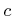

Aim of this Section is to clarify the relation between an analog signal and its discrete version, with particular emphasis on the numerical details for describing a signal both in the time or frequency domain.
Optilux works with discrete time signals. A discrete time signal is
an indexed sequence of real or complex numbers. A widely used signal
in Optilux is the discrete version of a digital modulation signal,
i.e. a sequence of information symbols emitted at rate [symbols/s].
plays a fundamental role for a digital signal and hence in Optilux
is saved into the global variable GSTATE.SYMBOLRATE in [Gsymbols/s].
A digital modulation signal in Optilux is a vector containing NSYMB
symbols, where each symbol is described by NT points. The
length of such a vector is therefore NFFT=NSYMB*NT points.
Remember that, since Optilux makes use of the Fast Fourier Transform
algorithm, such signals are intrinsically periodic of period NFFT.
Both variables NT and NSYMB are saved into the global
GSTATE.NT and GSTATE.NSYMB, respectively.
Some notes about the time:
The frequency, i.e. the fundamental variable of the Fourier domain,
is contained in the global variable GSTATE as GSTATE.FN.
Given a signal , being  the time, the Fourier transform
, being the frequency (GSTATE.FN),
is defined as:
the time, the Fourier transform
, being the frequency (GSTATE.FN),
is defined as:
being NT=GSTATE.NT and NSYMB=GSTATE.NSYMB.
Some notes about the frequency:
|
|
Any optical signal, like the electric field used by Optilux, is a bandpass signal, i.e. its frequency spectrum has energy concentrated around an high frequency sinusoidal carrier. Generally speaking, the Fourier transform of the generic optical field has zero or negligible energy for frequencies satisfying and . The carrier frequency is usually expressed in terms of the central wavelength , being  the speed of light. Since usually the bandwidth is much smaller than , it is customary to express in the following way:
GSTATE.FIELDX and GSTATE.FIELDY are initialized by reset_all to empty and created by create_field. GSTATE.FIELDX is always not empty after create_field, while GSTATE.FIELDY remains empty in absence of polarization effects.
|
Note: Remember that longer signals in the time domain
(GSTATE.NSYMB 1) have greater resolution in the frequency
domain, i.e. neighboring discrete frequencies are closer. On the contrary,
by increasing the Nyquist frequency (GSTATE.NT) it is possible
to increase the resolution in the time domain, i.e. the number of
points x symbol.
|
Optilux toolbox reference manual